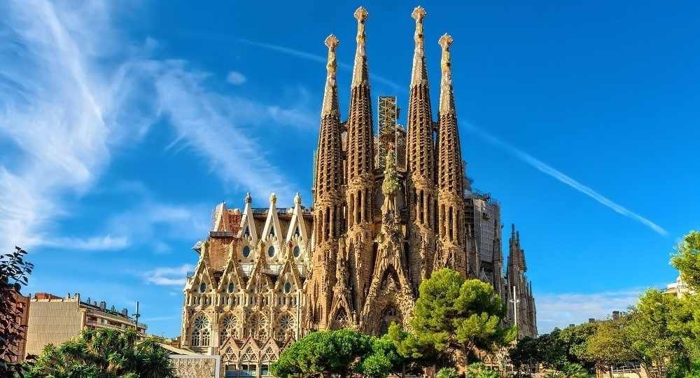

La Sagrada Familia

Inicio
Historia
Enlaces externos
Contacta con nosotros
Lista de enlaces externos
https://www.cataloniahotels.com/es/blog/sagrada-familia-historia-curiosidades/
https://sagradafamilia.org/es/home
https://canalhistoria.es/hoy-en-la-historia/inicio-de-las-obras-de-la-sagrada-familia/
https://www.casabatllo.es/antoni-gaudi/sagrada-familia/
https://es.wikipedia.org/wiki/Templo_Expiatorio_de_la_Sagrada_Familia